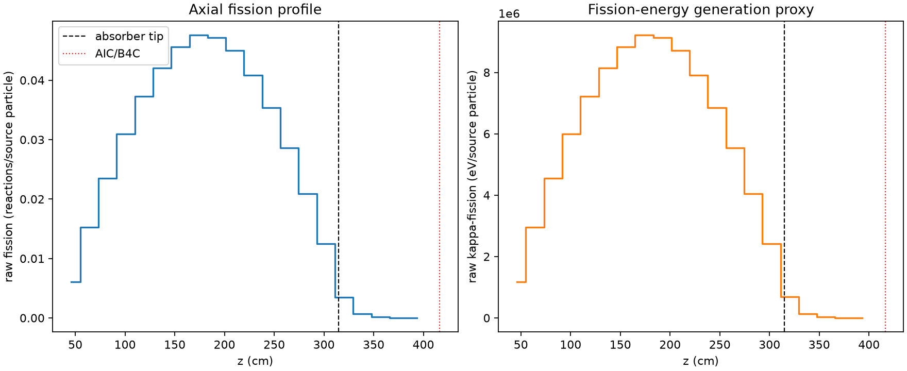
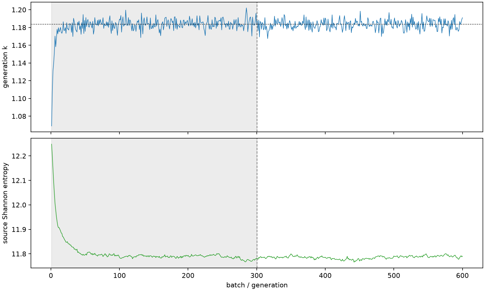

| field | value |
|---|---|
| experiment | V2-STAGE_256_OGRENCI_01-0029 |
| k | 1.1834873329098576 |
| MC standard error | 0.00018250309972180724 |
| seconds | 991.8253005660081 |
| acceptance | not_assessed |
| convergence | review_required |
Completed is output integrity only; physical and statistical review required. Zero tallies do not prove zero production or zero uncertainty.
| diagnostic | value |
|---|---|
| geometric fuel voxels | 5280 |
| zero fission tally voxels | 0 |
| low signal fuel voxels | 485 |
| low signal fission share | 9.408334955292598e-05 |
| low signal kappa share | 9.41167423052242e-05 |
| important fission share | 0.9500270508638006 |
| previous filter included | 4795 |
| duration estimate s | 1562.5173488400023 |
| actual minus estimate s | -570.6920482739943 |
| fission relative MC error | statistics |
|---|---|
| all_geometric_fuel | {"voxels": 5280, "positive_mean_voxels": 5280, "zero_mean_voxels": 0, "undefined_relative_error_voxels": 0, "median": 0.010411888513873443, "p95": 0.3036339298563436, "maximum": 0.8756976240771099} |
| low_signal | {"voxels": 485, "positive_mean_voxels": 485, "zero_mean_voxels": 0, "undefined_relative_error_voxels": 0, "median": 0.34341333601677027, "p95": 0.5870314981858334, "maximum": 0.8756976240771099} |
| important_95pct | {"voxels": 3411, "positive_mean_voxels": 3411, "zero_mean_voxels": 0, "undefined_relative_error_voxels": 0, "median": 0.008690033701872685, "p95": 0.013022485062610764, "maximum": 0.01643686499108808} |
| outside_previous_filter | {"voxels": 485, "positive_mean_voxels": 485, "zero_mean_voxels": 0, "undefined_relative_error_voxels": 0, "median": 0.34341333601677027, "p95": 0.5870314981858334, "maximum": 0.8756976240771099} |
| kappa_fission relative MC error | statistics |
|---|---|
| all_geometric_fuel | {"voxels": 5280, "positive_mean_voxels": 5280, "zero_mean_voxels": 0, "undefined_relative_error_voxels": 0, "median": 0.010400246234444731, "p95": 0.30300910490568644, "maximum": 0.8749658365676007} |
| low_signal | {"voxels": 485, "positive_mean_voxels": 485, "zero_mean_voxels": 0, "undefined_relative_error_voxels": 0, "median": 0.34278955657223253, "p95": 0.5868288562083165, "maximum": 0.8749658365676007} |
| important_95pct | {"voxels": 3411, "positive_mean_voxels": 3411, "zero_mean_voxels": 0, "undefined_relative_error_voxels": 0, "median": 0.008679865793964757, "p95": 0.013006433544814485, "maximum": 0.01641688485957487} |
| outside_previous_filter | {"voxels": 485, "positive_mean_voxels": 485, "zero_mean_voxels": 0, "undefined_relative_error_voxels": 0, "median": 0.34278955657223253, "p95": 0.5868288562083165, "maximum": 0.8749658365676007} |
| axial bin | fission share | kappa-fission share |
|---|---|---|
| 1 | 0.012514800552065003 | 0.012515316297992761 |
| 2 | 0.03154648472894153 | 0.0315465235520201 |
| 3 | 0.04869890817919789 | 0.04869864662489829 |
| 4 | 0.06400539506457052 | 0.06400515510927586 |
| 5 | 0.07712791493508343 | 0.07712757544466567 |
| 6 | 0.08702078835638406 | 0.08702049009884964 |
| 7 | 0.09440071473351641 | 0.09440068218720095 |
| 8 | 0.09845799462550124 | 0.09845766584157828 |
| 9 | 0.09771845783964472 | 0.09771801390565896 |
| 10 | 0.09307804558994878 | 0.09307772356213374 |
| 11 | 0.08457999778266176 | 0.08457992937033788 |
| 12 | 0.0732183134265457 | 0.07321810577299376 |
| 13 | 0.05924010056179874 | 0.059239879638835174 |
| 14 | 0.04329935644947921 | 0.04329921533614039 |
| 15 | 0.025808197014606328 | 0.025808180040128248 |
| 16 | 0.007270176891240835 | 0.007271777407653727 |
| 17 | 0.0015237017734811723 | 0.0015242857100170042 |
| 18 | 0.0003809966070245824 | 0.00038113842825208776 |
| 19 | 8.967607221532476e-05 | 8.970951731126047e-05 |
| 20 | 1.99788160929414e-05 | 1.998615405605239e-05 |
Histories include the inactive-to-active transition at batch 300. kappa-fission approximates fission energy production, not total heat deposition.

